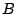

| Home - Topics - Publications - Blog - CV - Photos - Funny |
Bryan Ford
Massachusetts Institute of Technology
baford (at) mit.edu
Pyda Srisuresh
Caymas Systems, Inc.
srisuresh (at) yahoo.com
Dan Kegel
dank (at) kegel.com
J'fais des trous, des petits trous
toujours des petits trous
- S. Gainsbourg
The combined pressures of tremendous growth and massive security challenges have forced the Internet to evolve in ways that make life difficult for many applications. The Internet's original uniform address architecture, in which every node has a globally unique IP address and can communicate directly with every other node, has been replaced with a new de facto Internet address architecture, consisting of a global address realm and many private address realms interconnected by Network Address Translators (NAT). In this new address architecture, illustrated in Figure 1, only nodes in the “main,” global address realm can be easily contacted from anywhere in the network, because only they have unique, globally routable IP addresses. Nodes on private networks can connect to other nodes on the same private network, and they can usually open TCP or UDP connections to “well-known” nodes in the global address realm. NATs on the path allocate temporary public endpoints for outgoing connections, and translate the addresses and port numbers in packets comprising those sessions, while generally blocking all incoming traffic unless otherwise specifically configured.
The Internet's new de facto address architecture is suitable for client/server communication in the typical case when the client is on a private network and the server is in the global address realm. The architecture makes it difficult for two nodes on different private networks to contact each other directly, however, which is often important to the “peer-to-peer” communication protocols used in applications such as teleconferencing and online gaming. We clearly need a way to make such protocols function smoothly in the presence of NAT.
One of the most effective methods of establishing peer-to-peer communication between hosts on different private networks is known as “hole punching.” This technique is widely used already in UDP-based applications, but essentially the same technique also works for TCP. Contrary to what its name may suggest, hole punching does not compromise the security of a private network. Instead, hole punching enables applications to function within the the default security policy of most NATs, effectively signaling to NATs on the path that peer-to-peer communication sessions are “solicited” and thus should be accepted. This paper documents hole punching for both UDP and TCP, and details the crucial aspects of both application and NAT behavior that make hole punching work.
Unfortunately, no traversal technique works with all existing NATs, because NAT behavior is not standardized. This paper presents some experimental results evaluating hole punching support in current NATs. Our data is derived from results submitted by users throughout the Internet by running our “NAT Check” tool over a wide variety of NATs by different vendors. While the data points were gathered from a “self-selecting” user community and may not be representative of the true distribution of NAT implementations deployed on the Internet, the results are nevertheless generally encouraging.
While evaluating basic hole punching, we also point out variations that can make hole punching work on a wider variety of existing NATs at the cost of greater complexity. Our primary focus, however, is on developing the simplest hole punching technique that works cleanly and robustly in the presence of “well-behaved” NATs in any reasonable network topology. We deliberately avoid excessively clever tricks that may increase compatibility with some existing “broken” NATs in the short term, but which only work some of the time and may cause additional unpredictability and network brittleness in the long term.
Although the larger address space of IPv6 [3] may eventually reduce the need for NAT, in the short term IPv6 is increasing the demand for NAT, because NAT itself provides the easiest way to achieve interoperability between IPv4 and IPv6 address domains [24]. Further, the anonymity and inaccessibility of hosts on private networks has widely perceived security and privacy benefits. Firewalls are unlikely to go away even when there are enough IP addresses: IPv6 firewalls will still commonly block unsolicited incoming traffic by default, making hole punching useful even to IPv6 applications.
The rest of this paper is organized as follows. Section 2 introduces basic terminology and NAT traversal concepts. Section 3 details hole punching for UDP, and Section 4 introduces hole punching for TCP. Section 5 summarizes important properties a NAT must have in order to enable hole punching. Section 6 presents our experimental results on hole punching support in popular NATs, Section 7 discusses related work, and Section 8 concludes.
This section introduces basic NAT terminology used throughout the paper, and then outlines general NAT traversal techniques that apply equally to TCP and UDP.
This paper adopts the NAT terminology and taxonomy defined in RFC 2663 [21], as well as additional terms defined more recently in RFC 3489 [19].
Of particular importance is the notion of session. A session endpoint for TCP or UDP is an (IP address, port number) pair, and a particular session is uniquely identified by its two session endpoints. From the perspective of one of the hosts involved, a session is effectively identified by the 4-tuple (local IP, local port, remote IP, remote port). The direction of a session is normally the flow direction of the packet that initiates the session: the initial SYN packet for TCP, or the first user datagram for UDP.
Of the various flavors of NAT, the most common type is traditional or outbound NAT, which provides an asymmetric bridge between a private network and a public network. Outbound NAT by default allows only outbound sessions to traverse the NAT: incoming packets are dropped unless the NAT identifies them as being part of an existing session initiated from within the private network. Outbound NAT conflicts with peer-to-peer protocols because when both peers desiring to communicate are “behind” (on the private network side of) two different NATs, whichever peer tries to initiate a session, the other peer's NAT rejects it. NAT traversal entails making P2P sessions look like “outbound” sessions to both NATs.
Outbound NAT has two sub-varieties: Basic NAT, which only translates IP addresses, and Network Address/Port Translation (NAPT), which translates entire session endpoints. NAPT, the more general variety, has also become the most common because it enables the hosts on a private network to share the use of a single public IP address. Throughout this paper we assume NAPT, though the principles and techniques we discuss apply equally well (if sometimes trivially) to Basic NAT.
The most reliable--but least efficient--method
of P2P communication across NAT
is simply to make the communication
look to the network like standard client/server communication,
through relaying.
Suppose two client
hosts and 
have each initiated TCP or UDP
connections to a well-known server  ,
at
,
at  's global IP address 18.181.0.31 and port number 1234.
As shown in Figure 2,
the clients reside on separate private networks, and
their respective NATs prevent either client from directly
initiating a connection to the other.
Instead of attempting a direct connection, the two clients can simply
use the server
's global IP address 18.181.0.31 and port number 1234.
As shown in Figure 2,
the clients reside on separate private networks, and
their respective NATs prevent either client from directly
initiating a connection to the other.
Instead of attempting a direct connection, the two clients can simply
use the server  to relay messages between them. For example, to
send a message to client , client simply sends the message to
server
to relay messages between them. For example, to
send a message to client , client simply sends the message to
server  along its already-established client/server connection, and
server
along its already-established client/server connection, and
server  forwards the message on to client using its existing
client/server connection with .
forwards the message on to client using its existing
client/server connection with .
Relaying always works as long as both clients can connect to the server. Its disadvantages are that it consumes the server's processing power and network bandwidth, and communication latency between the peering clients is likely increased even if the server is well-connected. Nevertheless, since there is no more efficient technique that works reliably on all existing NATs, relaying is a useful fall-back strategy if maximum robustness is desired. The TURN protocol [18] defines a method of implementing relaying in a relatively secure fashion.
Some P2P applications use
a straightforward but limited technique,
known as connection reversal,
to enable communication
when both hosts have connections to a well-known rendezvous server  and only one of the peers is behind a NAT,
as shown in Figure 3.
If wants to initiate a connection to ,
then a direct connection attempt works automatically,
because is not behind a NAT
and 's NAT interprets the connection as an outgoing session.
If wants to initiate a connection to , however,
any direct connection attempt to is blocked by 's NAT.
can instead relay a connection request to
through a well-known server
and only one of the peers is behind a NAT,
as shown in Figure 3.
If wants to initiate a connection to ,
then a direct connection attempt works automatically,
because is not behind a NAT
and 's NAT interprets the connection as an outgoing session.
If wants to initiate a connection to , however,
any direct connection attempt to is blocked by 's NAT.
can instead relay a connection request to
through a well-known server  ,
asking to attempt a “reverse” connection back to .
Despite the obvious limitations of this technique,
the central idea of using a well-known rendezvous server
as an intermediary to help set up direct peer-to-peer connections
is fundamental to the more general hole punching techniques
described next.
,
asking to attempt a “reverse” connection back to .
Despite the obvious limitations of this technique,
the central idea of using a well-known rendezvous server
as an intermediary to help set up direct peer-to-peer connections
is fundamental to the more general hole punching techniques
described next.
UDP hole punching enables two clients to set up a direct peer-to-peer UDP session with the help of a well-known rendezvous server, even if the clients are both behind NATs. This technique was mentioned in section 5.1 of RFC 3027 [10], documented more thoroughly elsewhere on the Web [13], and used in recent experimental Internet protocols [17,11]. Various proprietary protocols, such as those for on-line gaming, also use UDP hole punching.
Hole punching assumes that the two clients,
and ,
already have active UDP sessions with a rendezvous server  .
When a client registers with
.
When a client registers with  ,
the server records two endpoints for that client:
the (IP address, UDP port) pair
that the client believes itself to be using to talk with
,
the server records two endpoints for that client:
the (IP address, UDP port) pair
that the client believes itself to be using to talk with  ,
and the (IP address, UDP port) pair
that the server observes the client to be using to talk with it.
We refer to the first pair as the client's private endpoint
and the second as the client's public endpoint.
The server might
obtain the client's private endpoint from the client itself
in a field in the body of the client's registration message,
and obtain the client's public endpoint
from the source IP address and source UDP port fields
in the IP and UDP headers of that registration message.
If the client is not behind a NAT,
then its private and public endpoints should be identical.
,
and the (IP address, UDP port) pair
that the server observes the client to be using to talk with it.
We refer to the first pair as the client's private endpoint
and the second as the client's public endpoint.
The server might
obtain the client's private endpoint from the client itself
in a field in the body of the client's registration message,
and obtain the client's public endpoint
from the source IP address and source UDP port fields
in the IP and UDP headers of that registration message.
If the client is not behind a NAT,
then its private and public endpoints should be identical.
A few poorly behaved NATs are known to scan the body of UDP datagrams for 4-byte fields that look like IP addresses, and translate them as they would the IP address fields in the IP header. To be robust against such behavior, applications may wish to obfuscate IP addresses in messages bodies slightly, for example by transmitting the one's complement of the IP address instead of the IP address itself. Of course, if the application is encrypting its messages, then this behavior is not likely to be a problem.
Suppose client wants to establish a UDP session directly with client . Hole punching proceeds as follows:
We now consider how UDP hole punching handles each of three specific network scenarios. In the first situation, representing the “easy” case, the two clients actually reside behind the same NAT, on one private network. In the second, most common case, the clients reside behind different NATs. In the third scenario, the clients each reside behind two levels of NAT: a common “first-level” NAT deployed by an ISP for example, and distinct “second-level” NATs such as consumer NAT routers for home networks.
It is in general difficult or impossible for the application itself to determine the exact physical layout of the network, and thus which of these scenarios (or the many other possible ones) actually applies at a given time. Protocols such as STUN [19] can provide some information about the NATs present on a communication path, but this information may not always be complete or reliable, especially when multiple levels of NAT are involved. Nevertheless, hole punching works automatically in all of these scenarios without the application having to know the specific network organization, as long as the NATs involved behave in a reasonable fashion. (“Reasonable” behavior for NATs will be described later in Section 5.)
First consider the simple scenario in which the two clients
(probably unknowingly) happen to reside behind the same NAT,
and are therefore located in the same private IP address realm,
as shown in Figure 4.
Client has established a UDP session with server  , to which the
common NAT has assigned its own public port number 62000.
Client has similarly established a session with
, to which the
common NAT has assigned its own public port number 62000.
Client has similarly established a session with  ,
to which the NAT has assigned public port number 62005.
,
to which the NAT has assigned public port number 62005.
Suppose that client uses the hole punching technique outlined above
to establish a UDP session with ,
using server  as an introducer.
Client sends
as an introducer.
Client sends  a message requesting a connection to .
a message requesting a connection to .
 responds to with 's public and private endpoints,
and also forwards 's public and private endpoints to .
Both clients then attempt to send UDP datagrams to each other
directly at each of these endpoints.
The messages directed to the public endpoints
may or may not reach their destination,
depending on whether or not the NAT supports hairpin translation
as described below in Section 3.5.
The messages directed at the private endpoints
do reach their destinations, however,
and since this direct route through the private network
is likely to be faster than an indirect route through the NAT anyway,
the clients are most likely to select the private endpoints
for subsequent regular communication.
responds to with 's public and private endpoints,
and also forwards 's public and private endpoints to .
Both clients then attempt to send UDP datagrams to each other
directly at each of these endpoints.
The messages directed to the public endpoints
may or may not reach their destination,
depending on whether or not the NAT supports hairpin translation
as described below in Section 3.5.
The messages directed at the private endpoints
do reach their destinations, however,
and since this direct route through the private network
is likely to be faster than an indirect route through the NAT anyway,
the clients are most likely to select the private endpoints
for subsequent regular communication.
By assuming that NATs support hairpin translation, the application might dispense with the complexity of trying private as well as public endpoints, at the cost of making local communication behind a common NAT unnecessarily pass through the NAT. As our results in Section 6 show, however, hairpin translation is still much less common among existing NATs than are other “P2P-friendly” NAT behaviors. For now, therefore, applications may benefit substantially by using both public and private endpoints.
Suppose clients and have private IP addresses
behind different NATs,
as shown in Figure 5.
and have each initiated UDP communication
sessions from their local port 4321
to port 1234 on server  .
In handling these outbound sessions,
NAT has assigned port 62000 at its own public IP address, 155.99.25.11,
for the use of 's session with
.
In handling these outbound sessions,
NAT has assigned port 62000 at its own public IP address, 155.99.25.11,
for the use of 's session with  ,
and NAT has assigned port 31000 at its IP address, 138.76.29.7,
to 's session with
,
and NAT has assigned port 31000 at its IP address, 138.76.29.7,
to 's session with  .
.
In 's registration message to  ,
reports its private endpoint to
,
reports its private endpoint to  as 10.0.0.1:4321,
where 10.0.0.1 is 's IP address on its own private network.
as 10.0.0.1:4321,
where 10.0.0.1 is 's IP address on its own private network.
 records 's reported private endpoint,
along with 's public endpoint as observed by
records 's reported private endpoint,
along with 's public endpoint as observed by  itself.
's public endpoint in this case is 155.99.25.11:62000,
the temporary endpoint assigned to the session by the NAT.
Similarly, when client registers,
itself.
's public endpoint in this case is 155.99.25.11:62000,
the temporary endpoint assigned to the session by the NAT.
Similarly, when client registers,
 records 's private endpoint as 10.1.1.3:4321
and 's public endpoint as 138.76.29.7:31000.
records 's private endpoint as 10.1.1.3:4321
and 's public endpoint as 138.76.29.7:31000.
Now client follows the hole punching procedure described above
to establish a UDP communication session directly with .
First, sends a request message to  asking for help connecting with .
In response,
asking for help connecting with .
In response,  sends 's public and private endpoints to ,
and sends 's public and private endpoints to .
and each start trying to send UDP datagrams
directly to each of these endpoints.
sends 's public and private endpoints to ,
and sends 's public and private endpoints to .
and each start trying to send UDP datagrams
directly to each of these endpoints.
Since and are on different private networks
and their respective private IP addresses are not globally routable,
the messages sent to these endpoints
will reach either the wrong host or no host at all.
Because many NATs also act as DHCP servers,
handing out IP addresses in a fairly deterministic way
from a private address pool usually determined by the NAT vendor by default,
it is quite likely in practice
that 's messages directed at 's private endpoint
will reach some (incorrect) host on 's private network
that happens to have the same private IP address as does.
Applications must therefore authenticate all messages
in some way to filter out such stray traffic robustly.
The messages might include application-specific names or cryptographic tokens,
for example,
or at least a random nonce pre-arranged through  .
.
Now consider 's first message sent to 's public endpoint,
as shown in Figure 5.
As this outbound message passes through 's NAT,
this NAT notices that this is the first UDP packet in a new outgoing session.
The new session's source endpoint (10.0.0.1:4321)
is the same as that of the existing session between and  ,
but its destination endpoint is different.
If NAT is well-behaved,
it preserves the identity of 's private endpoint,
consistently translating
all outbound sessions
from private source endpoint 10.0.0.1:4321
to the corresponding public source endpoint 155.99.25.11:62000.
's first outgoing message to 's public endpoint
thus, in effect,
“punches a hole” in 's NAT
for a new UDP session
identified by the endpoints
(10.0.0.1:4321, 138.76.29.7:31000) on 's private network,
and by the endpoints
(155.99.25.11:62000, 138.76.29.7:31000) on the main Internet.
,
but its destination endpoint is different.
If NAT is well-behaved,
it preserves the identity of 's private endpoint,
consistently translating
all outbound sessions
from private source endpoint 10.0.0.1:4321
to the corresponding public source endpoint 155.99.25.11:62000.
's first outgoing message to 's public endpoint
thus, in effect,
“punches a hole” in 's NAT
for a new UDP session
identified by the endpoints
(10.0.0.1:4321, 138.76.29.7:31000) on 's private network,
and by the endpoints
(155.99.25.11:62000, 138.76.29.7:31000) on the main Internet.
If 's message to 's public endpoint reaches 's NAT before 's first message to has crossed 's own NAT, then 's NAT may interpret 's inbound message as unsolicited incoming traffic and drop it. 's first message to 's public address, however, similarly opens a hole in 's NAT, for a new UDP session identified by the endpoints (10.1.1.3:4321, 155.99.25.11:62000) on 's private network, and by the endpoints (138.76.29.7:31000, 155.99.25.11:62000) on the Internet. Once the first messages from and have crossed their respective NATs, holes are open in each direction and UDP communication can proceed normally. Once the clients have verified that the public endpoints work, they can stop sending messages to the alternative private endpoints.
In some topologies involving multiple NAT devices,
two clients cannot establish an “optimal” P2P route between
them without specific knowledge of the topology.
Consider a final scenario,
depicted in Figure 6.
Suppose NAT is a large industrial NAT deployed by an internet
service provider (ISP) to multiplex many customers onto a few public
IP addresses, and NATs and are small consumer NAT routers
deployed independently by two of the ISP's customers to multiplex
their private home networks onto their respective ISP-provided IP
addresses. Only server  and NAT have globally routable IP
addresses; the “public” IP addresses used by NAT and NAT are
actually private to the ISP's address realm, while client 's and
's addresses in turn are private to the addressing realms of NAT
and NAT , respectively.
Each client initiates an outgoing connection to server
and NAT have globally routable IP
addresses; the “public” IP addresses used by NAT and NAT are
actually private to the ISP's address realm, while client 's and
's addresses in turn are private to the addressing realms of NAT
and NAT , respectively.
Each client initiates an outgoing connection to server  as before,
causing NATs and each to create a single
public/private translation,
and causing NAT to establish a public/private translation
for each session.
as before,
causing NATs and each to create a single
public/private translation,
and causing NAT to establish a public/private translation
for each session.
Now suppose and attempt to establish
a direct peer-to-peer UDP connection
via hole punching.
The optimal routing strategy would be for client to
send messages to client 's “semi-public” endpoint at NAT ,
10.0.1.2:55000 in the ISP's addressing realm,
and for client to send messages
to 's “semi-public” endpoint at NAT ,
namely 10.0.1.1:45000.
Unfortunately, and have no way to learn these addresses,
because server  only sees the truly global public endpoints of the clients,
155.99.25.11:62000 and 155.99.25.11:62005 respectively.
Even if and had some way to learn these addresses,
there is still no guarantee that they would be usable,
because the address assignments in the ISP's private address realm
might conflict with unrelated address assignments
in the clients' private realms.
(NAT 's IP address in NAT 's realm
might just as easily have been 10.1.1.3, for example,
the same as client 's private address in NAT 's realm.)
only sees the truly global public endpoints of the clients,
155.99.25.11:62000 and 155.99.25.11:62005 respectively.
Even if and had some way to learn these addresses,
there is still no guarantee that they would be usable,
because the address assignments in the ISP's private address realm
might conflict with unrelated address assignments
in the clients' private realms.
(NAT 's IP address in NAT 's realm
might just as easily have been 10.1.1.3, for example,
the same as client 's private address in NAT 's realm.)
The clients
therefore have no choice
but to use their global public addresses as
seen by  for their P2P communication,
and rely on NAT providing hairpin or loopback translation.
When sends a UDP datagram to 's global endpoint,
155.99.25.11:62005,
NAT first translates the datagram's source endpoint
from 10.0.0.1:4321 to 10.0.1.1:45000.
The datagram now reaches NAT ,
which recognizes that the datagram's destination address
is one of NAT 's own translated public endpoints.
If NAT is well-behaved,
it then translates both
the source and destination addresses in the datagram
and “loops” the datagram back onto the private network,
now with a source endpoint of 155.99.25.11:62000
and a destination endpoint of 10.0.1.2:55000.
NAT finally translates the datagram's destination address
as the datagram enters 's private network,
and the datagram reaches .
The path back to works similarly.
Many NATs do not yet support hairpin translation,
but it is becoming more common
as NAT vendors become aware of this issue.
for their P2P communication,
and rely on NAT providing hairpin or loopback translation.
When sends a UDP datagram to 's global endpoint,
155.99.25.11:62005,
NAT first translates the datagram's source endpoint
from 10.0.0.1:4321 to 10.0.1.1:45000.
The datagram now reaches NAT ,
which recognizes that the datagram's destination address
is one of NAT 's own translated public endpoints.
If NAT is well-behaved,
it then translates both
the source and destination addresses in the datagram
and “loops” the datagram back onto the private network,
now with a source endpoint of 155.99.25.11:62000
and a destination endpoint of 10.0.1.2:55000.
NAT finally translates the datagram's destination address
as the datagram enters 's private network,
and the datagram reaches .
The path back to works similarly.
Many NATs do not yet support hairpin translation,
but it is becoming more common
as NAT vendors become aware of this issue.
Since the UDP transport protocol provides NATs with no reliable, application-independent way to determine the lifetime of a session crossing the NAT, most NATs simply associate an idle timer with UDP translations, closing the hole if no traffic has used it for some time period. There is unfortunately no standard value for this timer: some NATs have timeouts as short as 20 seconds. If the application needs to keep an idle UDP session active after establishing the session via hole punching, the application must send periodic keep-alive packets to ensure that the relevant translation state in the NATs does not disappear.
Unfortunately, many NATs associate UDP idle timers with individual UDP sessions defined by a particular pair of endpoints, so sending keep-alives on one session will not keep other sessions active even if all the sessions originate from the same private endpoint. Instead of sending keep-alives on many different P2P sessions, applications can avoid excessive keep-alive traffic by detecting when a UDP session no longer works, and re-running the original hole punching procedure again “on demand.”
Establishing peer-to-peer TCP connections between hosts behind NATs is slightly more complex than for UDP, but TCP hole punching is remarkably similar at the protocol level. Since it is not as well-understood, it is currently supported by fewer existing NATs. When the NATs involved do support it, however, TCP hole punching is just as fast and reliable as UDP hole punching. Peer-to-peer TCP communication across well-behaved NATs may in fact be more robust than UDP communication, because unlike UDP, the TCP protocol's state machine gives NATs on the path a standard way to determine the precise lifetime of a particular TCP session.
The main practical challenge to applications wishing to implement TCP hole punching is not a protocol issue but an application programming interface (API) issue. Because the standard Berkeley sockets API was designed around the client/server paradigm, the API allows a TCP stream socket to be used to initiate an outgoing connection via connect(), or to listen for incoming connections via listen() and accept(), but not both. Further, TCP sockets usually have a one-to-one correspondence to TCP port numbers on the local host: after the application binds one socket to a particular local TCP port, attempts to bind a second socket to the same TCP port fail.
For TCP hole punching to work, however,
we need to use a single local TCP port
to listen for incoming TCP connections
and to initiate multiple outgoing TCP connections concurrently.
Fortunately, all major operating systems
support a special TCP socket option,
commonly named SO_REUSEADDR,
which allows the application to bind multiple sockets
to the same local endpoint
as long as this option is set on all of the sockets involved.
BSD systems have introduced a SO_REUSEPORT option
that controls port reuse separately from address reuse;
on such systems both of these options must be set.
Suppose that client wishes to set up a TCP connection with client .
We assume as usual
that both and already have active TCP connections
with a well-known rendezvous server  .
The server records
each registered client's public and private endpoints,
just as for UDP.
At the protocol level,
TCP hole punching works almost exactly as for UDP:
.
The server records
each registered client's public and private endpoints,
just as for UDP.
At the protocol level,
TCP hole punching works almost exactly as for UDP:
Unlike with UDP,
where each client only needs one socket
to communicate with both  and any number of peers simultaneously,
with TCP each client application must manage several sockets
bound to a single local TCP port on that client node,
as shown in Figure 7.
Each client needs a stream socket representing its connection to
and any number of peers simultaneously,
with TCP each client application must manage several sockets
bound to a single local TCP port on that client node,
as shown in Figure 7.
Each client needs a stream socket representing its connection to  ,
a listen socket on which to accept incoming connections from peers,
and at least two additional stream sockets
with which to initiate outgoing connections
to the other peer's public and private TCP endpoints.
,
a listen socket on which to accept incoming connections from peers,
and at least two additional stream sockets
with which to initiate outgoing connections
to the other peer's public and private TCP endpoints.
Consider the common-case scenario in which the clients and are behind different NATs, as shown in Figure 5, and assume that the port numbers shown in the figure are now for TCP rather than UDP ports. The outgoing connection attempts and make to each other's private endpoints either fail or connect to the wrong host. As with UDP, it is important that TCP applications authenticate their peer-to-peer sessions, due of the likelihood of mistakenly connecting to a random host on the local network that happens to have the same private IP address as the desired host on a remote private network.
The clients' outgoing connection attempts to each other's public endpoints, however, cause the respective NATs to open up new “holes” enabling direct TCP communication between and . If the NATs are well-behaved, then a new peer-to-peer TCP stream automatically forms between them. If 's first SYN packet to reaches 's NAT before 's first SYN packet to reaches 's NAT, for example, then 's NAT may interpret 's SYN as an unsolicited incoming connection attempt and drop it. 's first SYN packet to should subsequently get through, however, because 's NAT sees this SYN as being part of the outbound session to that 's first SYN had already initiated.
What the client applications observe to happen with their sockets during TCP hole punching depends on the timing and the TCP implementations involved. Suppose that 's first outbound SYN packet to 's public endpoint is dropped by NAT , but 's first subsequent SYN packet to 's public endpoint gets through to before 's TCP retransmits its SYN. Depending on the operating system involved, one of two things may happen:
Since the received SYN packet did not include an ACK for 's previous outbound SYN, 's TCP replies to 's public endpoint with a SYN-ACK packet, the SYN part being merely a replay of 's original outbound SYN, using the same sequence number. Once 's TCP receives 's SYN-ACK, it responds with its own ACK for 's SYN, and the TCP session enters the connected state on both ends.
Since 's prior outbound connect() attempt to used a combination of source and destination endpoints that is now in use by another socket, namely the one just returned to the application via accept(), 's asynchronous connect() attempt must fail at some point, typically with an “address in use” error. The application nevertheless has the working peer-to-peer stream socket it needs to communicate with , so it ignores this failure.
The first behavior above appears to be usual for BSD-based operating systems, whereas the second behavior appears more common under Linux and Windows.
Suppose that the timing of the various connection attempts during the hole punching process works out so that the initial outgoing SYN packets from both clients traverse their respective local NATs, opening new outbound TCP sessions in each NAT, before reaching the remote NAT. In this “lucky” case, the NATs do not reject either of the initial SYN packets, and the SYNs cross on the wire between the two NATs. In this case, the clients observe an event known as a simultaneous TCP open: each peer's TCP receives a “raw” SYN while waiting for a SYN-ACK. Each peer's TCP responds with a SYN-ACK, whose SYN part essentially “replays” the peer's previous outgoing SYN, and whose ACK part acknowledges the SYN received from the other peer.
What the respective applications observe in this case again depends on the behavior of the TCP implementations involved, as described in the previous section. If both clients implement the second behavior above, it may be that all of the asynchronous connect() calls made by the application ultimately fail, but the application running on each client nevertheless receives a new, working peer-to-peer TCP stream socket via accept()--as if this TCP stream had magically “created itself” on the wire and was merely passively accepted at the endpoints! As long as the application does not care whether it ultimately receives its peer-to-peer TCP sockets via connect() or accept(), the process results in a working stream on any TCP implementation that properly implements the standard TCP state machine specified in RFC 793 [23].
Each of the alternative network organization scenarios discussed in Section 3 for UDP works in exactly the same way for TCP. For example, TCP hole punching works in multi-level NAT scenarios such as the one in Figure 6 as long as the NATs involved are well-behaved.
In a variant of the above TCP hole punching procedure
implemented by the NatTrav library [4],
the clients attempt connections to each other
sequentially rather than in parallel.
For example:
(1) informs via  of its desire to communicate,
without simultaneously listening on its local port;
(2) makes a connect() attempt to ,
which opens a hole in 's NAT
but then fails due to a timeout
or RST from 's NAT or a RST from itself;
(3) closes its connection to
of its desire to communicate,
without simultaneously listening on its local port;
(2) makes a connect() attempt to ,
which opens a hole in 's NAT
but then fails due to a timeout
or RST from 's NAT or a RST from itself;
(3) closes its connection to  and does a listen() on its local port;
(4)
and does a listen() on its local port;
(4)  in turn closes its connection with ,
signaling to attempt a connect() directly to .
in turn closes its connection with ,
signaling to attempt a connect() directly to .
This sequential procedure may be particularly useful
on Windows hosts prior to XP Service Pack 2,
which did not correctly implement simultaneous TCP open,
or on sockets APIs
that do not support the SO_REUSEADDR functionality.
The sequential procedure is more timing-dependent,
however,
and may be slower in the common case
and less robust in unusual situations.
In step (2), for example,
must allow its “doomed-to-fail” connect() attempt
enough time to ensure that at least one SYN packet
traverses all NATs on its side of the network.
Too little delay risks
a lost SYN derailing the process,
whereas too much delay increases the total time
required for hole punching.
The sequential hole punching procedure also effectively “consumes”
both clients' connections to the server  ,
requiring the clients to open fresh connections to
,
requiring the clients to open fresh connections to  for each new P2P connection to be forged.
The parallel hole punching procedure,
in contrast,
typically completes as soon as
both clients make their outgoing connect() attempts,
and allows each client to retain and re-use
a single connection to
for each new P2P connection to be forged.
The parallel hole punching procedure,
in contrast,
typically completes as soon as
both clients make their outgoing connect() attempts,
and allows each client to retain and re-use
a single connection to  indefinitely.
indefinitely.
This section describes the key behavioral properties NATs must have in order for the hole punching techniques described above to work properly. Not all current NAT implementations satisfy these properties, but many do, and NATs are gradually becoming more “P2P-friendly” as NAT vendors recognize the demand for peer-to-peer protocols such as voice over IP and on-line gaming.
This section is not meant to be a complete or definitive specification for how NATs “should” behave; we provide it merely for information about the most commonly observed behaviors that enable or break P2P hole punching. The IETF has started a new working group, BEHAVE, to define official “best current practices” for NAT behavior. The BEHAVE group's initial drafts include the considerations outlined in this section and others; NAT vendors should of course follow the IETF working group directly as official behavioral standards are formulated.
The hole punching techniques described here only work automatically if the NAT consistently maps a given TCP or UDP source endpoint on the private network to a single corresponding public endpoint controlled by the NAT. A NAT that behaves in this way is referred to as a cone NAT in RFC 3489 [19] and elsewhere, because the NAT “focuses” all sessions originating from a single private endpoint through the same public endpoint on the NAT.
Consider again the scenario in Figure 5, for example.
When client initially contacted the well-known server  ,
NAT chose to use port 62000
at its own public IP address, 155.99.25.11,
as a temporary public endpoint
to representing 's private endpoint 10.0.0.1:4321.
When later attempts to establish a peer-to-peer session with
by sending a message from the same local private endpoint
to 's public endpoint,
depends on NAT preserving the identity of this private endpoint,
and re-using the existing public endpoint of 155.99.25.11:62000,
because that is the public endpoint for
to which will be sending its corresponding messages.
,
NAT chose to use port 62000
at its own public IP address, 155.99.25.11,
as a temporary public endpoint
to representing 's private endpoint 10.0.0.1:4321.
When later attempts to establish a peer-to-peer session with
by sending a message from the same local private endpoint
to 's public endpoint,
depends on NAT preserving the identity of this private endpoint,
and re-using the existing public endpoint of 155.99.25.11:62000,
because that is the public endpoint for
to which will be sending its corresponding messages.
A NAT that is only designed to support client/server protocols
will not necessarily preserve the identities of private endpoints in this way.
Such a NAT is a symmetric NAT in RFC 3489 terminology.
For example,
after the NAT assigns the public endpoint 155.99.25.11:62000
to client 's session with server  ,
the NAT might assign a different public endpoint,
such as 155.99.25.11:62001,
to the P2P session that tries to initiate with .
In this case,
the hole punching process fails to provide connectivity,
because the subsequent incoming messages from
reach NAT at the wrong port number.
,
the NAT might assign a different public endpoint,
such as 155.99.25.11:62001,
to the P2P session that tries to initiate with .
In this case,
the hole punching process fails to provide connectivity,
because the subsequent incoming messages from
reach NAT at the wrong port number.
Many symmetric NATs allocate port numbers for successive sessions in a fairly predictable way. Exploiting this fact, variants of hole punching algorithms [9,1] can be made to work “much of the time” even over symmetric NATs by first probing the NAT's behavior using a protocol such as STUN [19], and using the resulting information to “predict” the public port number the NAT will assign to a new session. Such prediction techniques amount to chasing a moving target, however, and many things can go wrong along the way. The predicted port number might already be in use causing the NAT to jump to another port number, for example, or another client behind the same NAT might initiate an unrelated session at the wrong time so as to allocate the predicted port number. While port number prediction can be a useful trick for achieving maximum compatibility with badly-behaved existing NATs, it does not represent a robust long-term solution. Since symmetric NAT provides no greater security than a cone NAT with per-session traffic filtering, symmetric NAT is becoming less common as NAT vendors adapt their algorithms to support P2P protocols.
When a NAT receives a SYN packet on its public side for what appears to be an unsolicited incoming connection attempt, it is important that the NAT just silently drop the SYN packet. Some NATs instead actively reject such incoming connections by sending back a TCP RST packet or even an ICMP error report, which interferes with the TCP hole punching process. Such behavior is not necessarily fatal, as long as the applications re-try outgoing connection attempts as specified in step 4 of the process described in Section 4.2, but the resulting transient errors can make hole punching take longer.
A few existing NATs are known to scan “blindly” through packet payloads for 4-byte values that look like IP addresses, and translate them as they would the IP address in the packet header, without knowing anything about the application protocol in use. This bad behavior fortunately appears to be uncommon, and applications can easily protect themselves against it by obfuscating IP addresses they send in messages, for example by sending the bitwise complement of the desired IP address.
Some multi-level NAT situations require hairpin translation support in order for either TCP or UDP hole punching to work, as described in Section 3.5. The scenario shown in Figure 6, for example, depends on NAT providing hairpin translation. Support for hairpin translation is unfortunately rare in current NATs, but fortunately so are the network scenarios that require it. Multi-level NAT is becoming more common as IPv4 address space depletion continues, however, so support for hairpin translation is important in future NAT implementations.
To evaluate the robustness of the TCP and UDP hole punching techniques described in this paper on a variety of existing NATs, we implemented and distributed a test program called NAT Check [16], and solicited data from Internet users about their NATs.
NAT Check's primary purpose is to test NATs for the two behavioral properties most crucial to reliable UDP and TCP hole punching: namely, consistent identity-preserving endpoint translation (Section 5.1), and silently dropping unsolicited incoming TCP SYNs instead of rejecting them with RSTs or ICMP errors (Section 5.2). In addition, NAT Check separately tests whether the NAT supports hairpin translation (Section 5.4), and whether the NAT filters unsolicited incoming traffic at all. This last property does not affect hole punching, but provides a useful indication the NAT's firewall policy.
NAT Check makes no attempt to test every relevant facet of NAT behavior individually: a wide variety of subtle behavioral differences are known, some of which are difficult to test reliably [12]. Instead, NAT Check merely attempts to answer the question, “how commonly can the proposed hole punching techniques be expected to work on deployed NATs, under typical network conditions?”
NAT Check consists of a client program to be run on a machine behind the NAT to be tested, and three well-known servers at different global IP addresses. The client cooperates with the three servers to check the NAT behavior relevant to both TCP and UDP hole punching. The client program is small and relatively portable, currently running on Windows, Linux, BSD, and Mac OS X. The machines hosting the well-known servers all run FreeBSD.
To test the NAT's behavior for UDP, the client opens a socket and binds it to a local UDP port, then successively sends “ping”-like requests to servers 1 and 2, as shown in Figure 8. These servers each respond to the client's pings with a reply that includes the client's public UDP endpoint: the client's own IP address and UDP port number as observed by the server. If the two servers report the same public endpoint for the client, NAT Check assumes that the NAT properly preserves the identity of the client's private endpoint, satisfying the primary precondition for reliable UDP hole punching.
When server 2 receives a UDP request from the client, besides replying directly to the client it also forwards the request to server 3, which in turn replies to the client from its own IP address. If the NAT's firewall properly filters “unsolicited” incoming traffic on a per-session basis, then the client never sees these replies from server 3, even though they are directed at the same public port as the replies from servers 1 and 2.
To test the NAT for hairpin translation support, the client simply opens a second UDP socket at a different local port and uses it to send messages to the public endpoint representing the client's first UDP socket, as reported by server 2. If these messages reach the client's first private endpoint, then the NAT supports hairpin translation.
The TCP test follows a similar pattern as for UDP. The client uses a single local TCP port to initiate outbound sessions to servers 1 and 2, and checks whether the public endpoints reported by servers 1 and 2 are the same, the first precondition for reliable TCP hole punching.
The NAT's response to unsolicited incoming connection attempts also impacts the speed and reliability of TCP hole punching, however, so NAT Check also tests this behavior. When server 2 receives the client's request, instead of immediately replying to the client, it forwards a request to server 3 and waits for server 3 to respond with a “go-ahead” signal. When server 3 receives this forwarded request, it attempts to initiate an inbound connection to the client's public TCP endpoint. Server 3 waits up to five seconds for this connection to succeed or fail, and if the connection attempt is still “in progress” after five seconds, server 3 responds to server 2 with the “go-ahead” signal and continues waiting for up to 20 seconds. Once the client finally receives server 2's reply (which server 2 delayed waiting for server 3's “go-ahead” signal), the client attempts an outbound connection to server 3, effectively causing a simultaneous TCP open with server 3.
What happens during this test depends on the NAT's behavior as follows. If the NAT properly just drops server 3's “unsolicited” incoming SYN packets, then nothing happens on the client's listen socket during the five second period before server 2 replies to the client. When the client finally initiates its own connection to server 3, opening a hole through the NAT, the attempt succeeds immediately. If on the other hand the NAT does not drop server 3's unsolicited incoming SYNs but allows them through (which is fine for hole punching but not ideal for security), then the client receives an incoming TCP connection on its listen socket before receiving server 2's reply. Finally, if the NAT actively rejects server 3's unsolicited incoming SYNs by sending back TCP RST packets, then server 3 gives up and the client's subsequent attempt to connect to server 3 fails.
To test hairpin translation for TCP, the client simply uses a secondary local TCP port to attempt a connection to the public endpoint corresponding to its primary TCP port, in the same way as for UDP.
The NAT Check data we gathered consists of 380 reported data points covering a variety of NAT router hardware from 68 vendors, as well as the NAT functionality built into different versions of eight popular operating systems. Only 335 of the total data points include results for UDP hairpin translation, and only 286 data points include results for TCP, because we implemented these features in later versions of NAT Check after we had already started gathering results. The data is summarized by NAT vendor in Table 1; the table only individually lists vendors for which at least five data points were available. The variations in the test results for a given vendor can be accounted for by a variety of factors, such as different NAT devices or product lines sold by the same vendor, different software or firmware versions of the same NAT implementation, different configurations, and probably occasional NAT Check testing or reporting errors.
Out of the 380 reported data points for UDP, in 310 cases (82%) the NAT consistently translated the client's private endpoint, indicating basic compatibility with UDP hole punching. Support for hairpin translation is much less common, however: of the 335 data points that include UDP hairpin translation results, only 80 (24%) show hairpin translation support.
Out of the 286 data points for TCP, 184 (64%) show compatibility with TCP hole punching: the NAT consistently translates the client's private TCP endpoint, and does not send back RST packets in response to unsolicited incoming connection attempts. Hairpin translation support is again much less common: only 37 (13%) of the reports showed hairpin support for TCP.
Since these reports were generated by a “self-selecting” community of volunteers, they do not constitute a random sample and thus do not necessarily represent the true distribution of the NATs in common use. The results are nevertheless encouraging: it appears that the majority of commonly-deployed NATs already support UDP and TCP hole punching at least in single-level NAT scenarios.
There are a few limitations in NAT Check's current testing protocol that may cause misleading results in some cases. First, we only learned recently that a few NAT implementations blindly translate IP addresses they find in unknown application payloads, and the NAT Check protocol currently does not protect itself from this behavior by obfuscating the IP addresses it transmits.
Second, NAT Check's current hairpin translation checking may yield unnecessarily pessimistic results because it does not use the full, two-way hole punching procedure for this test. NAT Check currently assumes that a NAT supporting hairpin translation does not filter “incoming” hairpin connections arriving from the private network in the way it would filter incoming connections arriving at the public side of the NAT, because such filtering is unnecessary for security. We later realized, however, that a NAT might simplistically treat any traffic directed at the NAT's public ports as “untrusted” regardless of its origin. We do not yet know which behavior is more common.
Finally, NAT implementations exist that consistently translate the client's private endpoint as long as only one client behind the NAT is using a particular private port number, but switch to symmetric NAT or even worse behaviors if two or more clients with different IP addresses on the private network try to communicate through the NAT from the same private port number. NAT Check could only detect this behavior by requiring the user to run it on two or more client hosts behind the NAT at the same time. Doing so would make NAT Check much more difficult to use, however, and impossible for users who only have one usable machine behind the NAT. Nevertheless, we plan to implement this testing functionality as an option in a future version of NAT Check.
Despite testing difficulties such as those above, our results are generally corroborated by those of a large ISP, who recently found that of the top three consumer NAT router vendors, representing 86% of the NATs observed on their network, all three vendors currently produce NATs compatible with UDP hole punching [25]. Additional independent results recently obtained using the UDP-oriented STUN protocol [12], and STUNT, a TCP-enabled extension [8,9], also appear consistent with our results. These latter studies provide more information on each NAT by testing a wider variety of behaviors individually, instead of just testing for basic hole punching compatibility as NAT Check does. Since these more extensive tests require multiple cooperating clients behind the NAT and thus are more difficult to run, however, these results are so far available on a more limited variety of NATs.
UDP hole punching was first explored and publicly documented by Dan Kegel [13], and is by now well-known in peer-to-peer application communities. Important aspects of UDP hole punching have also been indirectly documented in the specifications of several experimental protocols, such as STUN [19], ICE [17], and Teredo [11]. We know of no existing published work that thoroughly analyzes hole punching, however, or that points out the hairpin translation issue for multi-level NAT (Section 3.5).
We also know of no prior work
that develops TCP hole punching
in the symmetric fashion described here.
Even the existence of the crucial
SO_REUSEADDR/SO_REUSEPORT options
in the Berkeley sockets API
appears to be little-known among P2P application developers.
NatTrav [4]
implements a similar but asymmetric TCP hole punching procedure
outlined earlier in Section 4.5.
NUTSS [9]
and NATBLASTER [1]
implement more complex TCP hole punching tricks
that can work around some of the bad NAT behaviors
mentioned in Section 5,
but they require the rendezvous server to spoof source IP addresses,
and they also require the client applications to have access to “raw” sockets,
usually available only at root or administrator privilege levels.
Protocols such as SOCKS [14], UPnP [26], and MIDCOM [22] allow applications to traverse a NAT through explicit cooperation with the NAT. These protocols are not widely or consistently supported by NAT vendors or applications, however, and do not appear to address the increasingly important multi-level NAT scenarios. Explicit control of a NAT further requires the application to locate the NAT and perhaps authenticate itself, which typically involves explicit user configuration. When hole punching works, in contrast, it works with no user intervention.
Recent proposals such as HIP [15] and FARA [2] extend the Internet's basic architecture by decoupling a host's identity from its location [20]. IPNL [7], UIP [5,6], and DOA [27] propose schemes for routing across NATs in such an architecture. While such extensions are probably needed in the long term, hole punching enables applications to work over the existing network infrastructure immediately with no protocol stack upgrades, and leaves the notion of “host identity” for applications to define.
Hole punching is a general-purpose technique for establishing peer-to-peer connections in the presence of NAT. As long as the NATs involved meet certain behavioral requirements, hole punching works consistently and robustly for both TCP and UDP communication, and can be implemented by ordinary applications with no special privileges or specific network topology information. Hole punching fully preserves the transparency that is one of the most important hallmarks and attractions of NAT, and works even with multiple levels of NAT--though certain corner case situations require hairpin translation, a NAT feature not yet widely implemented.
The authors wish to thank Dave Andersen for his crucial support in gathering the results presented in Section 6. We also wish to thank Henrik Nordstrom, Christian Huitema, Justin Uberti, Mema Roussopoulos, and the anonymous USENIX reviewers for valuable feedback on early drafts of this paper. Finally, we wish to thank the many volunteers who took the time to run NAT Check on their systems and submit the results.
http://www.upnp.org/.
| Bryan Ford |